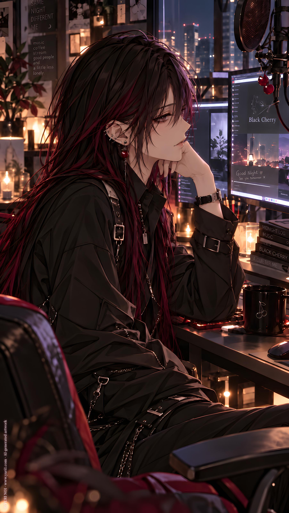

NOVEL／ YURI NO1
Black Cherry
CATEGORYNovel
SERIESSingle : Shorts
PUBLISHED
Full Text · YURI NO1
user
!依附件 AI Cream 與角色資料開始。
!劇本背景：現代、虛構、曖昧、試探
!親密尺度（上限16+）：高
!start
/
伊瑟絲。一名ASMR頻道新手直播主。
只露手，耳部按摩。無人聲。
10、100、200.. 慢慢累積的觀看次數，像是強心劑。
她需要創造一些收入來源。
/
她在觀摩其他類似頻道，發現有大量的頻道都會以女性嗲聲嗲氣的嗓音、氣音為賣點。
『我做不到...』她對自己的聲音算是有自信，但又害怕被熟人認出。
況且在頻道上對觀眾說著那麼曖昧的詞，用那麼荒謬的聲音...像在對情人耳語一樣。
甚至有些會放上大尺度的虛擬插畫人物封面。
她吸了一口氣，繼續觀摩。
直到被一個頻道吸引停了下來。
深色的長直髮。漠視的眼神。
氣音，但很尊。
御姐風格。
氣音內容，不算曖昧，只是一些尋常的哄睡詞。
艾遲疑了一下，加了追蹤。
那晚，她倒是很好睡
！單則回覆上限3000字元。
ChatGPT
Ethis had started with almost nothing.
A pair of silicone ears, a microphone she had spent far too long comparing reviews for, and a camera angle narrow enough to show only her hands.
No face. No voice.
Just slow circles along the artificial ears, fingertips brushing over their edges, the occasional soft scratch of nails against silicone.
Ten views.
Then a hundred.
Two hundred.
The numbers were tiny, but every increase gave her the same little rush.
Someone was watching.
More importantly, someone might keep watching.
Ethis needed another source of income. The channel wasn't exactly paying bills yet, but for the first time it felt possible rather than embarrassing.
That was enough to make her study the competition seriously.
Late at night, she sat with headphones on and moved from channel to channel.
Whispering seemed to be everywhere.
Soft feminine voices. Breath close to the microphone. Drawn-out words delivered with the kind of sweetness Ethis associated with private conversations conducted much too close to someone's ear.
"Mm... good girl."
Ethis immediately clicked away.
Another channel.
"Come closer for me..."
Click.
Another.
"I'll take care of you tonight."
Ethis stared at the screen.
'How do they say this with a straight face?'
She liked her own voice. That wasn't the problem.
The problem was imagining someone she knew finding the channel.
A coworker. An acquaintance. Someone hearing three seconds and thinking, Wait, isn't that—
Her stomach tightened.
And even without that risk, saying things like that to hundreds of strangers felt absurd.
Like whispering to a lover, except the lover was a chat room with usernames such as SleepyPotato88 and EarEnjoyer.
Some creators went further. Their thumbnails featured virtual women with impossible proportions, half-lidded eyes, exposed shoulders, poses that made the actual ear-cleaning content look almost innocent by comparison.
Ethis took a slow breath.
"Research," she murmured to herself, safely away from any active microphone.
She kept scrolling.
Then stopped.
The thumbnail wasn't bright.
No exaggerated expression. No suggestive pose.
Just a woman with long, straight dark hair against a muted background. Her gaze was cool enough to seem almost indifferent.
Ethis clicked.
A soft breath entered one side of her headphones.
Then a woman's voice, low and controlled.
"You're still awake."
Ethis's hand stopped on the mouse.
There was no sugary lilt. No theatrical teasing.
Just quiet certainty.
"That's all right."
A pause.
"Close your eyes. You don't need to do anything else tonight."
Ethis leaned back slightly.
The voice was airy enough for ASMR, but dignified. Mature. Almost commanding without ever becoming harsh.
No flirting.
No pet names.
No ridiculous noises.
Just ordinary words delivered as though the speaker had already decided Ethis would be sleeping soon.
"Relax your shoulders."
Ethis did.
She frowned.
Then straightened them again out of principle.
The woman continued.
"Stop thinking about tomorrow."
Ethis stared at the dark-haired avatar.
'Excuse me?'
Her cursor hovered over the follow button.
She hesitated.
Clicked it.
That night, she left the video playing beside her pillow.
She only intended to listen for ten minutes.
When morning came, one earbud was under her shoulder, her phone was nearly out of battery, and the video had ended hours ago.
Ethis stared at the ceiling for several seconds.
Then reached for her phone.
The channel was still followed.
She left it that way.
user
/
她點進那頻道的介紹。
「28歲的女孩。
喜歡女人。」
她的心臟猛地跳了一下。
為什麼要寫在上面啊，這種事情...
「喜歡更多女觀眾來聆聽。
到X來看我，偶爾會有更生活化的Spaces 語音活動。」
她點過去。用自己的私人小帳登入。
「黑色櫻桃的ASMR」
...追了。
ChatGPT
The next evening, Ethis opened the channel again.
Not the newest upload.
Not even the video she had fallen asleep to.
She clicked the profile.
The bio was short.
28-year-old woman.
I like women.
Ethis's heart gave one hard, ridiculous beat.
She stared at the second line.
'Why would you put that there?'
There was nothing suggestive about it. No wink. No implication. Just a plain statement sitting beneath the channel name as casually as someone's favorite drink.
That somehow made it worse.
Her eyes moved down.
More female listeners are always welcome.
Find me on X. I occasionally host more casual Spaces there.
Ethis hesitated.
Then clicked.
The account opened in another app.
She immediately checked which profile she was logged into.
Not her main account.
Good.
Her private alt had almost nothing attached to it: no real photo, no workplace, no mutual acquaintances that she knew of. Just a vague username and a feed mostly populated by things she would never have wanted connected to her everyday identity.
Safe enough.
The profile header read:
Black Cherry ASMR.
Ethis scrolled.
There were announcements for new uploads, photos of microphones and recording setups, occasional pictures of coffee or late-night convenience-store food.
Far more ordinary than she had expected.
That was somehow dangerous too.
The woman behind the cool voice apparently complained about delivery delays, posted blurry photos of the moon, and once wrote:
Bought a new blanket.
No, you may not have it.
Listen to tonight's stream and sleep under your own.
Ethis's mouth twitched.
She scrolled farther.
A Spaces announcement from several days ago.
Late-night chat. No ASMR tonight.
Women especially welcome.
I want company while I drink.
Ethis paused over it longer than necessary.
There were replies underneath.
People teasing her.
People calling her voice unfair.
One woman had written, If you talk to me like that after drinking, I'm blaming you for whatever happens to my sleep schedule.
Black Cherry had replied:
Then don't stay up.
That was all.
Ethis pressed her lips together.
'That's... actually kind of cool.'
She immediately disliked that thought.
She returned to the top of the profile.
The Follow button sat there.
One tap.
That was it.
Nobody would know.
Black Cherry certainly wouldn't notice one additional follower among thousands.
Ethis rested her thumb against the screen.
"..."
Tap.
Following.
Her heart reacted as if she had done something considerably more serious.
Ethis stared at the button.
'It's just an ASMR account.'
She locked her phone.
Three seconds later, she unlocked it again.
Still following.
"...Fine."
She put the phone facedown beside her.
A notification arrived almost immediately.
Black Cherry ASMR is hosting a Space.
Ethis slowly turned her head toward the phone.
The screen glowed innocently on the table.
She did not touch it.
Not for nearly a full minute.
user
/
伊這幾天直播了幾場ASMR。
很快的，當黑色櫻桃的Spaces 預定時間來到，她也已經在那裡等待。
開始了。
犯規。
太犯規了。
依然是那個御姐輕而氣音的腔調，但談話內容。顯然私密多了。
「小甜莓們睡不著時，除了聽黑色櫻桃哄妳們，還會做什麼？」
「玩三消遊戲？還是偷偷滑我的帳號在亂想？」
「我也很想妳們。想用小叉子，把妳們...一個一個，扔進嘴裡。吃得一點都不剩。」
「...好啦，開玩笑的。」
在講什麼啊？
2000多人正在收聽。
好想要成為唯一的一個。
ChatGPT
Over the next few days, Ethis streamed several more times.
Her viewer count crept upward again. A few familiar usernames began returning. Someone left a comment saying her ear massage sounds were especially good for studying. Another asked whether she might ever try whispering.
Ethis ignored that one.
Then Black Cherry's scheduled Space finally arrived.
Ethis was already there before it started.
She had told herself she only wanted to observe how a more experienced creator handled live audio.
That explanation lasted approximately thirty seconds.
The Space connected.
A faint breath.
Then that voice.
"Good evening, sweet berries."
Ethis went completely still.
Unfair.
Absolutely unfair.
It was the same controlled, mature tone from the ASMR uploads, still soft enough to feel close to the ear—but without the distance of a scripted sleep track.
This was conversation.
Which meant Black Cherry sounded more relaxed.
More personal.
More dangerous.
"Couldn't sleep again?" she murmured. "What do my little sweet berries do when you can't sleep, besides letting Black Cherry put you to bed?"
The listener count climbed past two thousand.
Replies poured in beneath the Space.
Black Cherry chuckled softly.
"Match-three games?"
A pause.
"That's cute."
Ethis frowned at her phone.
'Why did that sound like flirting?'
"And what else?"
Another tiny laugh.
"Oh? Some of you secretly scroll through my account and think strange things about me?"
Ethis nearly dropped her phone.
Her thumb instinctively backed out of the profile page she had, in fact, been scrolling through while listening.
"No judgment," Black Cherry continued lazily. "I'm very understanding."
Ethis stared at the ceiling.
'You are doing that on purpose.'
The conversation drifted between sleep habits, drinks, late-night food, music, and increasingly playful responses to listeners.
Nothing explicit.
That was almost the problem.
Black Cherry never seemed to cross a clear line.
She simply walked along it in heels.
"I miss you too," she said after reading another message.
Ethis's grip tightened slightly around her phone.
"Mm. All of you."
A breath brushed across the microphone.
"I want to take a little fork..."
Silence.
Ethis waited.
"...pick up my sweet berries one by one..."
The voice lowered.
"...and put you in my mouth."
Ethis's face went hot.
Black Cherry let the silence sit there for one unbearable second.
"Eat every last one."
The listener chat exploded.
Ethis stared at the screen.
"...What are you talking about?"
As though hearing her personally, Black Cherry laughed.
"All right. I'm joking."
'No, you're not.'
Ethis rolled onto her side and pulled the blanket higher.
Two thousand people.
More than two thousand, now.
All of them listening to the same voice.
All of them being called sweet berries.
All of them receiving the same quiet laugh, the same teasing pauses, the same soft good-night wishes.
Something unpleasant twisted inside her chest.
It was ridiculous.
She didn't know this woman.
Black Cherry didn't know she existed.
Ethis was a tiny anonymous icon in a crowd of thousands.
The Space continued.
Someone asked whether Black Cherry remembered regular listeners.
"Of course I recognize some of you," she replied. "You're surprisingly easy to remember when you keep appearing in front of me."
Ethis's eyes lowered toward her own anonymous account name.
She had never posted.
Never replied.
Never spoken.
Just followed.
Watched.
Listened.
Invisible.
And suddenly, invisibility didn't feel nearly as comforting as it usually did.
Black Cherry laughed again at something in the replies.
Ethis pressed her lips together.
Two thousand people.
That was far too many.
The thought appeared before she could stop it.
'I want to be the only one.'
Ethis blinked.
Then buried half her face in the pillow.
"...That's insane."
Black Cherry's voice continued softly through the earbud.
"Still awake, sweet berries?"
Ethis closed her eyes.
Unfortunately, yes.
user
/
「嗨，我是伊瑟絲。一名新手，我的頻道****，可以向妳請教學習嗎？」
不，爛透了。
伊開啟便條紙工具，打下文字。
「妳好，妳的聲音好好聽，我想向妳請教可以嗎？我的頻道****...」
太蠢了。
「嗨，這是我的頻道****，想跟前輩交流ASMR技術可以嗎？」
嗯？
「嗨♡這是我的頻道****，想跟前輩交流ASMR技術可以嗎？」
好。
這個。
/
她還不忘先把自己的帳號放上一張無害的插圖。上頭只是花瓣之類毫無個資辨識度的東西。
伊深吸了一口氣，複製內容，到黑色櫻桃的X頁面上傳送私人訊息。
幾乎是當下，對方已讀。
她的呼吸都快停了。
/
「我剛剛去看了。妳的手很漂亮。」
「有Discord嗎？」
/
「有，Ethis***-****」那是她已經準備好的，資料與頻道相襯的身份。
/
「好，我加妳。」
伊沒想到一切竟然那麼順利。
！最長3000字但不一定要塞滿。
ChatGPT
"Hi, I'm Ethis. I'm new to ASMR, and this is my channel: ****. Would it be okay if I asked you for some advice?"
Ethis stared at the message.
No.
Terrible.
She opened a notes app and started over.
"Hello. Your voice is really beautiful. Could I ask you for some advice? My channel is ****..."
She grimaced.
'Why does that sound like I'm confessing something?'
Delete.
"Hi. This is my channel: ****. Would you be interested in exchanging some ASMR tips with a beginner?"
She read it twice.
Not bad.
Then, after several seconds of thought, she added one tiny detail.
"Hi♡ This is my channel: ****. Would you be interested in exchanging some ASMR tips with a beginner?"
Ethis stared at the heart.
Removed it.
Put it back.
Removed it again.
"...No. Heart."
She restored it.
Perfect.
Or at least as perfect as a message could be after spending nearly fifteen minutes changing one symbol.
Before sending anything, Ethis checked her own account.
Blank avatar.
Absolutely not.
She quickly uploaded an illustration she'd prepared earlier: pale petals scattered over a muted background. Pretty enough to look intentional, generic enough to reveal absolutely nothing about her.
No face.
No location.
No personal information.
Just Ethis.
She took a breath, copied the message, opened Black Cherry's X profile, and pressed Send.
Delivered.
Ethis immediately put her phone down.
Then picked it back up.
Read.
Her breathing nearly stopped.
"What?"
She hadn't even had time to regret sending it properly.
Three dots appeared.
Black Cherry was typing.
Then came the reply.
"I just watched your channel."
Ethis sat straighter.
Another message.
"Your hands are beautiful."
Her brain stopped processing language.
She looked down at her own hands.
The same hands that had spent that afternoon opening a package with kitchen scissors and getting adhesive stuck to one finger.
'Beautiful?'
A new message appeared.
"Do you have Discord?"
Ethis stared at it.
That was it?
No suspicion. No awkward small talk. No public creator etiquette ritual.
Straight to Discord.
Fortunately, she had prepared for exactly this possibility.
Not because she expected Black Cherry to ask.
Obviously.
She simply believed in proper account separation.
"Yes. Ethis***-****"
The account used the same petal image, the same name, and nothing connected to her ordinary identity.
Black Cherry replied almost immediately.
"Okay. I'll add you."
Ethis remained motionless.
A Discord notification appeared.
Friend request received.
She looked at the name.
Black Cherry.
"..."
Accept.
The status beside Black Cherry's name turned green.
Ethis had expected this process to take days. Perhaps a polite reply after a week. Maybe nothing at all.
Instead, less than five minutes after sending a nervous little message with a heart in it, the woman whose voice had been putting her to sleep was sitting inside her Discord friend list.
Another notification sounded.
Black Cherry:
"Hi"
user
/
不會吧。...
/
「妳的手好看到我希望它在我身上游移了。」
「我開玩笑的。」
「一切都很完美，但我不得不說，手比掏耳聲更吸引我的注意。」
/
『她在說什麼？..那是調情？』
/
「我..我不確定要不要加入人聲的部分，妳願意聽聽看我的聲音適合嗎？」
/
「來。」
對方的語音通話請求。
/
伊吸了一口氣。
接。
「妳好..」她努力擠出自己這輩子最好聽、嬌柔、輕盈、空靈的女聲。
彷彿正在參加什麼聲優選拔世界大賽一樣。
ChatGPT
'No way...'
Another message appeared before Ethis had properly recovered.
"Your hands are so pretty I kind of want them roaming all over me."
Ethis stopped breathing.
Then, almost immediately:
"I'm joking."
And another.
"Everything looks great, though. I have to admit, your hands distracted me more than the ear-cleaning sounds."
Ethis read the three messages again.
Then once more.
'What is she saying?'
Her fingers hovered uselessly above the keyboard.
'Was that flirting?'
It had to be.
Unless this was simply how Black Cherry spoke to everyone.
That possibility somehow made Ethis feel worse.
She typed several replies, erased all of them, then finally forced herself to address the reason she'd contacted her in the first place.
"I... I'm not sure whether I should add voice content. Would you be willing to listen and tell me if my voice works for ASMR?"
The reply came almost immediately.
"Come."
Ethis frowned.
Come?
Before she could figure out what exactly that meant, Discord filled her screen with an incoming voice-call request.
Black Cherry.
Ethis's heart slammed once against her ribs.
"You mean right now?"
The call kept ringing.
Apparently, yes.
She sat straighter at her desk and touched her hair for absolutely no useful reason. There wasn't even a camera involved.
Then she checked her microphone.
Input device correct.
Noise suppression on.
Room quiet.
Door closed.
She swallowed.
Accept.
For half a second, there was only the faint electronic silence of an open connection.
Ethis inhaled carefully.
This was fine.
She only had to say hello.
One word.
Unfortunately, her brain interpreted that task as the final round of an international voice-acting championship.
She softened her breath.
Relaxed her throat.
Raised the pitch just slightly.
Made it airy, delicate, sweet, but hopefully not too sweet.
The most polished, graceful, impossibly pretty version of her voice she had ever produced in her life emerged into the microphone.
"Hello..."
Silence.
Ethis's fingers tightened around the edge of her desk.
Had she overdone it?
Definitely.
She sounded ridiculous.
She was about to clear her throat and try again when Black Cherry finally spoke.
"...Oh."
That one syllable, delivered in that familiar low breathy voice, made Ethis's posture go rigid.
A tiny pause followed.
Then Black Cherry asked calmly,
"Is that your normal voice?"
Ethis looked away from the monitor despite there being nobody to look away from.
"...Mostly."
A soft laugh reached her headphones.
Not mocking.
Worse.
Amused.
"Mostly?"
Ethis's face warmed.
"I made it a little softer."
"A little?"
"...Maybe more than a little."
Black Cherry laughed again, quiet and close.
"There you are."
Ethis blinked.
"What?"
"That voice."
The answer came without hesitation.
"I like that one better."
Ethis stared at the microphone.
"The normal one?"
"Mm."
Black Cherry's voice lowered just slightly.
"Don't audition for me."
Ethis's heartbeat stumbled.
"Just talk to me."
user
/
伊完全沒有準備。
不拿出最好聽的聲音，還有什麼？
/
「如何？還在嗎？」
「嗯..嗯嗯。我只是想確定，在頻道上這個人聲可以嗎？」
「妳走那些耳邊低語、女友哄睡路線是嗎？」黑色櫻桃說話比氣音時更讓人發麻。
氣音感性，但更像在『營業』。
現在說話的她簡直..像自己的女友般自然。
「我..還沒決定..妳有建議嗎？」
「那得先從妳可以用這個聲音說多久的話來決定了。」黑色櫻桃笑著。
「但我更想聽聽妳不是在頻道上的那種公開聲音。」
『那麼妳想聽什麼？』
她幾乎差點脫口而出。
不對，哪裡不對勁。
ChatGPT
Ethis had not prepared for this.
What was she supposed to do if she wasn't using her best voice?
Wasn't that the entire point?
"Hello?" Black Cherry asked. "Still there?"
"Mm... mhm." Ethis hurried to answer. "I just wanted to make sure this kind of voice would actually work on my channel."
"You mean the close-whispering, girlfriend-putting-you-to-sleep kind of thing?"
Ethis's fingers curled against her desk.
Black Cherry's normal speaking voice was somehow worse than the ASMR.
The whispering voice was sensual, certainly, but there was something deliberate about it. Professional. A voice placed carefully beside a microphone because an audience was listening.
This one wasn't.
This one sounded effortless.
Warm, low, casually intimate.
Like someone calling from the other side of Ethis's bed.
"I... haven't decided yet," Ethis said. "Do you have any suggestions?"
"First I'd have to know how long you can keep that voice up."
Black Cherry laughed.
Ethis immediately became aware of how carefully she was still controlling every syllable.
"If you force it for an hour, your throat will hate you. And people can usually tell."
"Oh."
"But honestly?"
"Mm?"
"I'd rather hear what you sound like when you're not using your public voice."
Ethis blinked.
"My... public voice?"
"The one you'd let strangers hear."
A pause.
"I want the other one."
Ethis's lips parted.
'Then what do you want to hear?'
The question nearly slipped out.
She caught it just before it became sound.
No.
Something was wrong here.
Not necessarily bad.
Just—
wrong.
They were supposed to be discussing ASMR technique.
Microphones.
Breath control.
Content direction.
Not whatever this was.
Ethis cleared her throat and let some of the exaggerated softness fall away.
"So... like this?"
Black Cherry went quiet.
Ethis immediately regretted it.
Her ordinary voice wasn't bad. She knew that. But without all the careful shaping, it felt strangely exposed.
Then Black Cherry gave a soft, satisfied hum.
"There."
Ethis's face warmed.
"There what?"
"That's much better."
"Better for ASMR?"
Another pause.
Black Cherry laughed.
"I didn't say that."
Ethis went completely still.
"...Then better for what?"
The question escaped before she could stop it.
Silence.
A quiet breath entered her headphones.
Then Black Cherry answered, perfectly naturally,
"For talking to me."
Ethis stared at her monitor.
The Discord call timer continued counting upward.
00:06:42.
She had known this woman personally for less than seven minutes.
And somehow, Ethis already felt like she was losing.
user
/
「妳對自己的『真音』沒信心？」黑色櫻桃的聲音聽起來像是尋常的說著魅惑聲。
彷彿她自己天生聲音就那麼撩人，那麼御。
/
伊再次吸了口氣。
「那這個呢。」她拿出了自己偷偷練習的，模仿那些嗲聲嗲氣、尺度誘人的ASMR型性感聲音，和剛剛的嬌甜不同，這款，更像是在耳邊調情。
對方似乎明顯停下了。
「再說些什麼。」
/
「還是，妳更喜歡我這樣跟妳說話。」
/
對方又停住了。
「我開始不在乎妳的真音了。」
「這個，我不建議妳在ASMR頻道上使用。」
/
「嗯..？是因為不夠專業嗎？」
她似乎隱約聽見對方轉而躺著繼續通話的沙沙聲。
「妳該去的地方是Onlyfans.. 我開玩笑的。」
「我比較希望這聲音只有我可以聽到。」
ChatGPT
"You're not confident in your real voice?" Black Cherry asked.
The question itself was ordinary.
Her voice was not.
Even when she wasn't whispering into an ASMR microphone, Black Cherry somehow sounded naturally seductive—low, composed, almost unfairly mature. As if the voice Ethis had assumed was carefully manufactured for an audience was simply... how she talked.
Ethis drew another breath.
"Then what about this?"
This one she had practiced in secret.
Not the sweet, airy voice she'd used earlier.
This was modeled after those bolder ASMR creators she'd spent nights studying: slower, warmer, deliberately intimate, with the words placed close enough to the microphone to feel like they belonged beside someone's ear rather than inside a public call.
A voice meant to flirt.
Black Cherry went silent.
Ethis noticed immediately.
The silence lasted just long enough to make her pulse quicken.
"Say something else."
Ethis's eyes widened slightly.
That didn't sound like technical feedback.
Still, she leaned closer to the microphone.
"Or..."
She let the voice soften further, almost smiling through it.
"...do you prefer it when I talk to you like this?"
Silence again.
Longer this time.
Ethis bit the inside of her cheek.
Had she gone too far?
Then Black Cherry exhaled quietly.
"I've stopped caring what your real voice sounds like."
Ethis blinked.
"What?"
"That one."
A faint rustle came through the call.
"I don't recommend using it on your ASMR channel."
Ethis frowned.
"Mm...? Because it doesn't sound professional enough?"
More rustling.
Fabric against fabric.
It sounded suspiciously like Black Cherry had changed position—perhaps leaving her desk, perhaps lying down somewhere while keeping the call connected.
"No."
Black Cherry's voice came back even softer.
"You should be on OnlyFans."
Ethis froze.
"...What?"
"I'm joking."
"You—"
"But seriously."
Black Cherry settled again, the faint noise of bedding reaching Ethis's headphones.
"I'd rather that voice not become public."
Ethis's hand stopped beside the microphone.
"...Why?"
There was barely any delay.
"Because I'd prefer it if I were the only one who got to hear it."
Ethis forgot every ASMR question she had prepared.
The microphone.
Her channel.
Viewer retention.
Audio interfaces.
All gone.
She stared helplessly at the Discord window.
Black Cherry's profile icon sat there, completely innocent.
"You say things like that very casually," Ethis finally managed.
"Do I?"
"Yes."
A quiet laugh.
"Then maybe you shouldn't use that voice on me."
Ethis swallowed.
"Why?"
Another pause.
This time, Black Cherry sounded almost amused by the question.
"Because apparently I say things very casually."
Ethis lowered her face into one hand.
Something had gone extremely wrong with this consultation.
And she was beginning to suspect she didn't want it fixed.
user
/
「如果妳的聲音，讓我說出什麼越界的話來回應妳。那麼算我的還是算妳的？」
/
「呃..？什麼意思？」
/
「沒什麼，妳會害我整個上午都沒有任何工作進度。」
輕靈的輕笑從伊口中傳出，那麼自然而沒有偽造。
「那樣太犯規了。」
「哪有..就只是笑了。」
「嗯..妳何不開個只有我可以看的頻道，把這些錄起來放上去。」
「開玩笑的。...」
ChatGPT
"If your voice makes me say something inappropriate in response, whose fault is that? Mine or yours?"
Ethis blinked.
"Uh... what does that mean?"
"Nothing."
Black Cherry sounded entirely too calm.
A faint shift of fabric came through again, followed by a long exhale.
"You're going to ruin my entire morning. I haven't gotten any work done."
Something about the exaggerated resignation caught Ethis off guard.
A laugh slipped out of her.
Light, airy, almost musical.
Not the sweet voice she'd carefully constructed earlier.
Not the intimate one she'd practiced alone.
Just her.
Black Cherry went silent.
Ethis's smile slowly faded.
"...What?"
"That's unfair."
"What is?"
"That."
Ethis frowned at the screen.
"I just laughed."
"Exactly."
Black Cherry sounded genuinely troubled by this development.
Ethis laughed again, softer this time.
"There! You're doing it again."
"Doing what?"
"Making noises that shouldn't be available to the general public."
Ethis covered her mouth, already smiling.
"You're ridiculous."
"Mm."
Black Cherry seemed to consider something.
"Why don't you make another channel?"
"Another channel?"
"Private."
Ethis's eyebrows rose.
"With one subscriber."
She already knew where this was going.
Black Cherry continued anyway.
"You can upload things like that there. Laughing. Talking. That other voice..."
Her tone lowered lazily on the last few words.
"And I'll conduct very serious professional evaluations."
Ethis stared at the Discord icon.
"Only you?"
"Obviously."
"What kind of channel has one viewer?"
"A very exclusive one."
Ethis laughed through her nose.
Black Cherry immediately made a quiet sound of defeat.
"See? Record that."
"No."
"I'll pay the subscription fee."
"There isn't a subscription fee."
"I'll invent one."
Ethis was smiling far too much now.
She leaned back in her chair, suddenly much less aware of the microphone between them.
"And what am I supposed to upload?"
"Whatever you wouldn't say on your real channel."
The answer came much too quickly.
Ethis's pulse gave a small jump.
Black Cherry paused.
Then, as though remembering that this had originally been a conversation between two ASMR creators rather than whatever it had become, she added,
"I'm joking."
"...Are you?"
A beat of silence.
"Mostly."
Ethis looked down at her hands.
Those same hands Black Cherry had already complimented twice.
The room suddenly felt warmer.
"You really flirt with people like this all the time, don't you?"
Black Cherry gave a quiet hum.
"Are you asking as a creator researching audience engagement?"
"No."
The answer escaped before Ethis could soften it.
Silence.
Then Black Cherry laughed.
Not the polished little breathy chuckle from her streams.
A real one.
Low and warm and unexpectedly pleased.
Ethis's stomach tightened.
"Good," Black Cherry said.
"...Why good?"
"Because I was getting tired of pretending this was about ASMR."
Ethis stopped moving.
There it was.
The thing she'd been carefully refusing to name since the call began.
She stared at the timer.
They had been talking for almost forty minutes.
"...Then what is it about?"
Black Cherry didn't answer immediately.
When she did, her voice was softer.
"Mostly about you."
Ethis's fingers tightened around the edge of her desk.
And for once, she had absolutely no prepared voice for that.
user
/
「妳給我十分鐘。我先掛掉通話。」伊已經有主意，她才不要放掉任何讓黑色櫻桃沉迷自己的機會。
/
「等等。」
「怎麼了？
「妳下次打來可以用手機？我想聽聽妳不用麥克風的聲音。」
「妳確定不是因為想聽聽我躺在被窩裡跟妳說話？」
「..好，妳學得很快。」
伊輕笑一聲，切斷通話。
她飛快的開啟另一個本來曾經要使用，又放棄的空閒帳號。
那是她本來想走更不要臉（她自己這麼稱呼）的ASMR頻道，名字更荒唐的『妳的枕邊女友伊瑟絲』。
就是這了。
她複製網址，傳給黑色櫻桃。
還先確認了七、八次沒有傳錯視窗或對象。
「給妳。我如果有什麼，就開私密影片然後跟妳分享。」
ChatGPT
"Give me ten minutes. I'm hanging up."
Ethis already had an idea.
There was no chance she was going to waste an opportunity to make Black Cherry even more interested in her.
"Wait."
Her finger stopped above the button.
"What?"
"Next time you call me, can you use your phone?"
Ethis blinked.
"Why?"
"I want to hear what you sound like without the microphone."
A smile slowly formed on Ethis's lips.
"Are you sure it isn't because you want to hear me talking to you while I'm lying under the covers?"
Silence.
Then Black Cherry sighed.
"...All right. You learn fast."
Ethis let out one of those light, natural laughs that had apparently become dangerous.
Before Black Cherry could complain about it again, she ended the call.
The silence in her room felt almost startling.
Then Ethis moved.
Fast.
She opened another account she'd created months ago and abandoned before ever using properly.
Originally, it had been intended for a second ASMR concept—the shameless version, as she'd privately called it.
The kind with breathy girlfriend roleplay, suggestive thumbnails, ridiculous titles, and absolutely none of the restrained elegance of her current channel.
She had chickened out before uploading anything.
The account still existed.
And its name was even worse than she remembered.
Your Bad-Side Girlfriend Ethis.
Ethis stared at it.
"...Perfect."
For perhaps the first time in history, that embarrassing name had a purpose.
She copied the channel link.
Then stopped.
Checked the Discord window.
Black Cherry.
Checked the link.
Checked the recipient again.
Black Cherry.
She switched windows and checked that she wasn't accidentally logged into any personal account.
Back.
Recipient.
Black Cherry.
Link.
Private channel.
Recipient again.
Black Cherry.
By the seventh or eighth inspection, Ethis finally accepted that she was not about to accidentally send "Your Bad-Side Girlfriend Ethis" to a coworker, family group, or some unfortunate unrelated person.
She pasted it.
"Here. If I make anything, I'll upload it privately and share the video with you."
Send.
The message appeared.
Ethis stared at it.
A few seconds passed.
Then Discord suddenly lit up with an incoming voice call.
Black Cherry.
Ethis froze.
"So much for ten minutes..."
She accepted.
"Hello?"
Black Cherry's voice arrived immediately.
"Your Bad... Side Girlfriend Ethis?"
Ethis covered her face.
She had somehow forgotten that Black Cherry would be able to read the channel name.
"Don't say it like that."
"So this already existed."
"There aren't any videos."
"You created an entire girlfriend ASMR channel and then got shy?"
"I changed my mind."
"Mm."
That smug little sound was considerably worse when spoken directly into her ear.
Ethis curled one leg beneath herself on the chair.
"It's just an unused account."
"So now it's private videos only for me."
There was a pause.
Black Cherry sounded pleased.
"I like this version better."
"Don't misunderstand. This is for testing."
"Of course."
"Professional testing."
"Naturally."
Ethis narrowed her eyes at absolutely nothing.
"Why do you sound like you don't believe me?"
"I believe you completely."
"You don't."
"No."
Ethis laughed despite herself.
Black Cherry went quiet.
Then came a soft sigh.
"There. That again."
"What?"
"That laugh."
Ethis pressed her lips together, still smiling.
"I can't help laughing."
"Then my professional recommendation is to record it."
"That's not an ASMR technique."
"It is now."
Ethis shook her head.
"And what exactly are you waiting for me to upload?"
"My girlfriend video."
Her fingers stopped against the phone.
"...Very bad-side girlfriend?"
"No. Mine sounds better."
Ethis immediately felt heat reach her face.
"The channel is called that."
"I know."
"You're deliberately changing the meaning."
"Am I?"
"Yes."
Black Cherry laughed softly.
Ethis rolled onto her bed and stared at the ceiling.
"Go work."
"Can't."
"Why?"
"Someone ruined my morning."
Ethis let out another helpless little laugh.
There was a brief silence from the other end.
Then Black Cherry's voice dropped into that familiar soft register.
"Record that next time."
Ethis pulled the phone slightly away from her ear.
"...You're impossible."
"And you're lying in bed now, aren't you?"
Ethis stopped.
"...How did you know?"
Black Cherry laughed.
"You really do learn fast."
user
/
黑色櫻桃緩緩開口：「這一切太荒謬了對吧？我甚至沒看過妳的樣子，就在這裡對我的『新壞壞女友』服務單人指導課程。」
「已經開始後悔了？」
「不，只是要補流程。」
伊笑了出來。
「妳真的很犯規。」
「妳的露臉直播很好看，那麻煩也指導一下這個。給我妳的分享ID。」
「拿去。」
她將一段本來就是私人的影片，加上了分享對象。
那是她之前測試露臉直播的影片，自己非常滿意，甚至連標題都上好了。
最後依然因為過不了內心那一關而沒有公開過。隨著『壞壞女友』頻道封存。
現在是時候讓這支影片上場了。
/
「噢..」
「妳看到了？還上鏡頭嗎？」
「我們為何不今晚出來吃個飯？」黑色櫻桃說。
伊愣了一下，隨即笑了出來。
「妳再那麼犯規，我要改成現在了。」
伊知道，黑色櫻桃真的只屬於她了，至少某部分是。
ChatGPT
Black Cherry was quiet for a few seconds before speaking.
"This is getting ridiculous, isn't it? I haven't even seen what you look like, and I'm already giving my new bad-side girlfriend private one-on-one lessons."
Ethis smiled into her pillow.
"Regretting it already?"
"No."
A pause.
"Just correcting the procedure."
Ethis laughed.
Black Cherry exhaled softly on the other end.
"You're really unfair."
"You've done face-cam streams before, right?" Ethis asked. "Then you can coach me on that too. Give me your share ID."
"Take it."
A moment later, Ethis had what she needed.
She opened the abandoned Bad-Side Girlfriend channel and found the video almost immediately.
It had never been public.
Months ago, she'd recorded it as a test for face-cam streaming. She had adjusted the lighting until she liked it, fixed the framing, checked the sound, and even given the video a proper title.
She had been proud of it.
That had been the problem.
The moment it started feeling real enough to publish, she'd lost her nerve.
So the video had stayed private along with the rest of the abandoned channel, preserved like evidence of a version of Ethis she'd almost allowed strangers to see.
Now she opened its sharing settings.
One account.
Black Cherry.
Done.
"Sent."
There was silence.
Ethis waited.
Then—
"Oh."
Her smile widened.
"You saw it?"
Another short pause.
"Am I good on camera?"
Black Cherry did not answer the question.
"Why don't we get dinner tonight?"
Ethis froze.
For once, she had no clever reply ready.
Then the absurdity of it hit her, and she laughed.
"That fast?"
"Mm."
Black Cherry sounded completely composed again.
Ethis knew better now.
She rolled onto her back, staring up at the ceiling.
"If you keep being this unfair, I'm going to change 'tonight' to 'right now.'"
A quiet laugh came through the phone.
"Is that a threat?"
"Maybe."
Ethis smiled to herself.
Somewhere between the public whispers, the private calls, the voices neither of them wanted to share with everyone else, and one video that had finally found its intended viewer, something had already shifted.
Black Cherry wasn't hers.
Not entirely.
Not yet.
But some private piece of her—the part behind the polished streams, behind the easy flirting, behind every casual "I'm joking"—had already turned toward Ethis and stayed there.
For now, that was enough.
user
！end